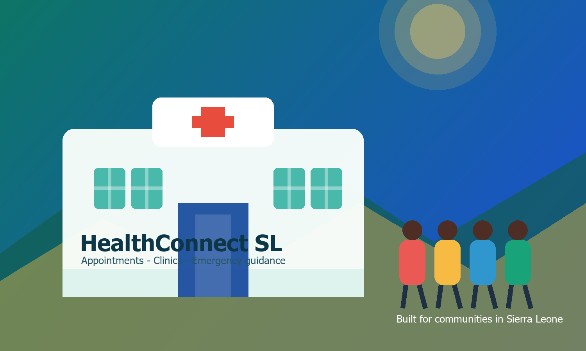
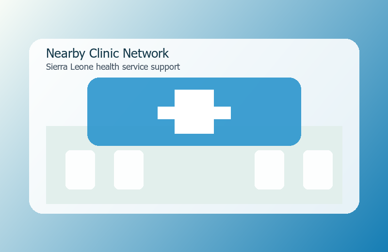
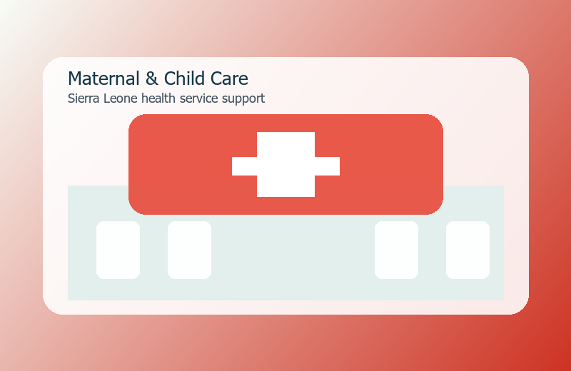
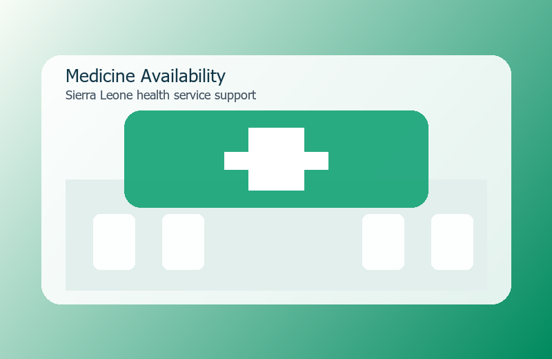

Late treatment
Families may delay care because they do not know the closest facility or available service.
Digital public health support for Sierra Leone
A community health website designed for families, students, and workers who need simple access to clinics, medicine updates, emergency contacts, and prevention advice.

Problem solved
HealthConnect SL reduces confusion by organizing basic health services, nearby facility details, appointment requests, and prevention messages in one mobile-friendly place.
Families may delay care because they do not know the closest facility or available service.
Patients need clear advice for malaria, maternal care, dehydration, and emergency warning signs.
The website works on phones and laptops, helping users connect with services quickly.
Core services

Filter clinics by district and service so people can decide where to seek help.

Promotes antenatal care, immunization, nutrition, and safe follow-up visits.

Shares medicine reminders, health tips, and first-response guidance before referral.
Clinic directory
Choose a district to show example clinics and services. This can be expanded with real Ministry of Health data in a future version.
Health tips
Basic interaction
Select a common symptom to receive a simple next step. This is not a diagnosis; it encourages safe action and referral.
Appointment form
Fill in the form and the page will show a confirmation summary. In a real deployment, this can connect to a database or email service.